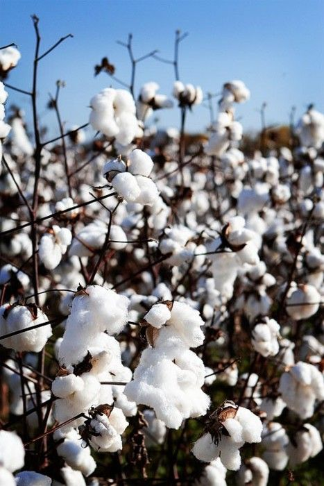

Cotton Cultivation Guide

1. Climate & Soil
Requires warm climate with 25–35°C temperature range.
Soil: Deep, well-drained black soil or alluvial soil, pH 6–8.
2. Land Preparation
Plow 2–3 times and level the field properly.
Form ridges and furrows or beds depending on irrigation practices.
3. Seed Selection & Sowing
Use hybrid or Bt cotton seeds for high yield and pest resistance.
Seed rate: 1.5–2 kg/acre.
Sow at spacing of 60 x 30 cm or as per variety recommendations.
Time: April–June in irrigated areas; June–July in rainfed areas.
4. Irrigation Management
First irrigation 3–5 days after sowing.
Subsequent irrigations every 12–15 days depending on soil moisture.
Critical stages: flowering and boll formation.
5. Fertilization
Basal: FYM (5–8 tons/acre), DAP (40 kg), MOP (20 kg).
Top dressing: Urea (40–50 kg) at 30 and 60 days after sowing.
6. Pest & Disease Management
Pests: Bollworm, Aphids, Whiteflies — use recommended pesticides like Spinosad or Neem-based sprays.
Diseases: Leaf spot, Wilt — treat with fungicides like Carbendazim or Trichoderma.
7. Investment Breakdown (Per Acre)
Input
Estimated Cost (INR)
Seeds
₹1,000 – ₹1,500
Fertilizers & FYM
₹3,000 – ₹4,500
Pesticides
₹2,000 – ₹3,000
Labor & Irrigation
₹10,000 – ₹15,000
Total Investment
₹16,000 – ₹24,000 per acre
8. Harvest & Yield
First picking starts 140–160 days after sowing.
Yield: 10–15 quintals of kapas per acre.
9. Market Price & Returns
Market rate: ₹6,000 – ₹8,000 per quintal of kapas.
Gross return: ₹60,000 – ₹1,20,000 per acre.
Net profit: ₹35,000 – ₹1,00,000 per acre.